Painel do Usuário
Você tem acesso a um painel exclusivo onde pode gerenciar o seu perfil, ver suas contribuições, tarefas concluídas e ver as versões e novidades do modskin.
Download antecipado
Um local onde você, tester, pode fazer download antecipado dos Betas e Lançamentos, todos os testers podem usar o modskin antecipado, seja para jogar ou apenas testar, está à sua escolha.
Cargo no Discord
Com o cargo "Tester" você ganha acesso aos servidores exclusivos do Discord, contendo todos da staff, e explicações úteis de como se adaptar e trabalhar conosco.
Ajuda básica
Aqui você pode entender mais sobre nosso sistema!
Esse sistema permite que nossos usuários tenham como base, uma pontuação para que nossos responsáveis possam saber quais estão melhorando em nossa staff e quais não estão se dedicando.
Isso vale para todos, menos os Devs.
Valor Máx de pontos de prestígios - 100
Valor Min de pontos de prestígios - 20
Ao chegar em uma das marcas você pode ser removido da Staff ou subir de cargo, conforme sua reputação.
Em 100 você poderá evoluir para um cargo superior ao seu atual. Se chegar em 20 você será removido da nossa staff.
Isso vale para todos, menos os Devs.
Valor Máx de pontos de prestígios - 100
Valor Min de pontos de prestígios - 20
Ao chegar em uma das marcas você pode ser removido da Staff ou subir de cargo, conforme sua reputação.
Em 100 você poderá evoluir para um cargo superior ao seu atual. Se chegar em 20 você será removido da nossa staff.
Com base em seus pontos você receberá uma marca, ela é como um Ranking do Servidor da Staff. O maior rank sendo o 7 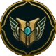.
Esse Rank é mostrado no painel, com uma grade mostrando o top do ranking.
Valores:
Esse Rank é mostrado no painel, com uma grade mostrando o top do ranking.
Valores:
- 20-29 - Sem Rank
- 30-39 - Rank 1
- 40-49 - Rank 2
- 50-59 - Rank 3
- 60-69 - Rank 4
- 70-79 -
 Rank 5
Rank 5 - 80-89 - 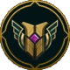 Rank 6
- 90-100 - Rank 7
São ganhos a partir de ajuda voluntária ou grandiosa dentro da L.S.P. UT.
Você fazendo algo que ajude a L.S.P. UT em qualquer coisa, tanto em divulgação ou qualquer outra forma, poderá estar recebendo esses pontos.
Funcionamento:
Você fazendo algo que ajude a L.S.P. UT em qualquer coisa, tanto em divulgação ou qualquer outra forma, poderá estar recebendo esses pontos.
Funcionamento:
-
Serve para dar aquele charme no seu status
- 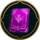 - 0 ( Icone Sem Elo )
- - 10 ( Icone de Ferro )
- - 20 ( Icone de Bronze ) 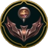
- - 30 ( Icone de Prata ) 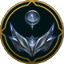
- - 40 ( Icone de Ouro )
- - 50 ( Icone de Platina ) 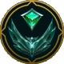
- - 60 ( Icone de Diamente ) 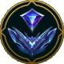
- - 70 ( Icone de Mestre )

- - 80 ( Icone de Grão-Mestre ) 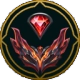
- - 90 ( Icone de Desafiante ) 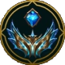
- - 100 ( Icone do Imperador Urf ) 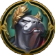
Esse mini sistema de destaque, recompensa um usuário que teve mais importância na Staff.
Quem tiver destaque na L.S.P. UT ganha "Destaque" por sua melhor colaboração, ou maior participação no progresso!
Sendo esses valores: Cinza, Azul, Vermelho, Roxo e Laranja.
Você também receberá um cargo de destaque com o destaque atual.
Esse destaque também será evolutivo com base nas sequências.
Funcionamento:
Quem tiver destaque na L.S.P. UT ganha "Destaque" por sua melhor colaboração, ou maior participação no progresso!
Sendo esses valores: Cinza, Azul, Vermelho, Roxo e Laranja.
Você também receberá um cargo de destaque com o destaque atual.
Esse destaque também será evolutivo com base nas sequências.
Funcionamento:
- Sem Destaque ( Padrão no Perfil - Painel )
- Sequencia de 1 Destaques
- Sequencia de 2 Destaques
- 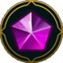 Sequencia de 3 Destaques
- Sequencia de 4 Destaques
Este símbolo () permite ao usuário receber imunidade contra qualquer rebaixamento.
A imunidade só será dada assim que seu nível de "Destaque" for maior que nível Roxo.
O usuário fica imune a qualquer rebaixamento, perda de pontos ou ranking dos P.P.
Evoluir seu nível de cargo, reseta todos os atributos inclusos ( Rank, Pontos, Sequencia, Pontos Míticos e P.P ).
Alem disso, ao evoluir você recebe 13 Fragmentos 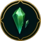
A imunidade só será dada assim que seu nível de "Destaque" for maior que nível Roxo.
O usuário fica imune a qualquer rebaixamento, perda de pontos ou ranking dos P.P.
Evoluir seu nível de cargo, reseta todos os atributos inclusos ( Rank, Pontos, Sequencia, Pontos Míticos e P.P ).
Alem disso, ao evoluir você recebe 13 Fragmentos 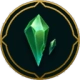
Este símbolo () te avisara que você está com pontos baixo, menor que 29.
Dado esta situação você poderá ser rebaixado se chegar a um nível extremo, ou ser removido da staff.
Ele ficara até que seus pontos sejam maior que 29 P.P.
Dado esta situação você poderá ser rebaixado se chegar a um nível extremo, ou ser removido da staff.
Ele ficara até que seus pontos sejam maior que 29 P.P.